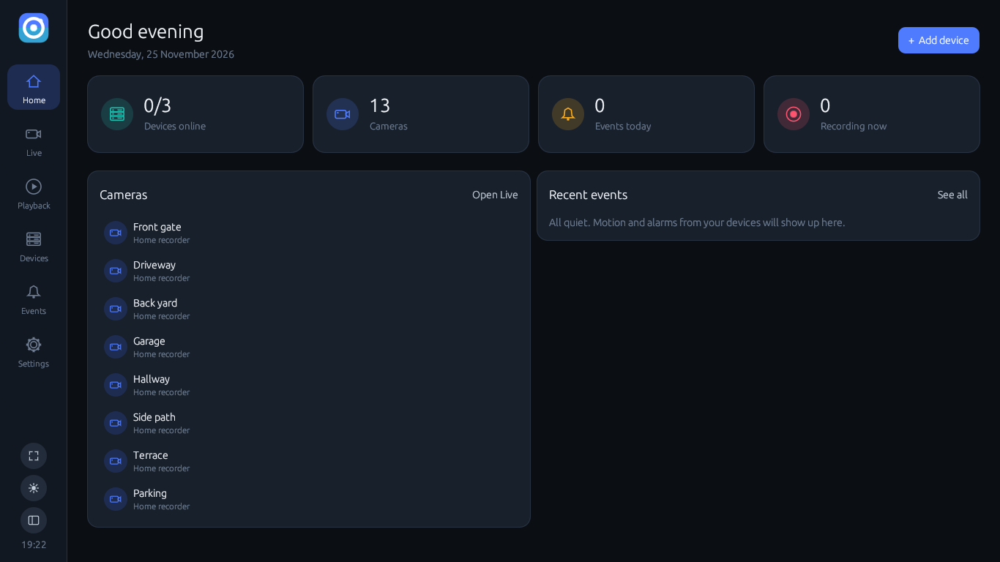
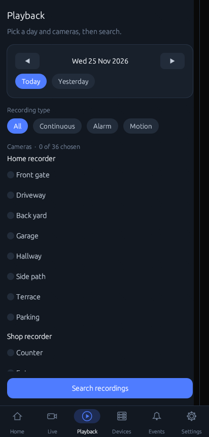
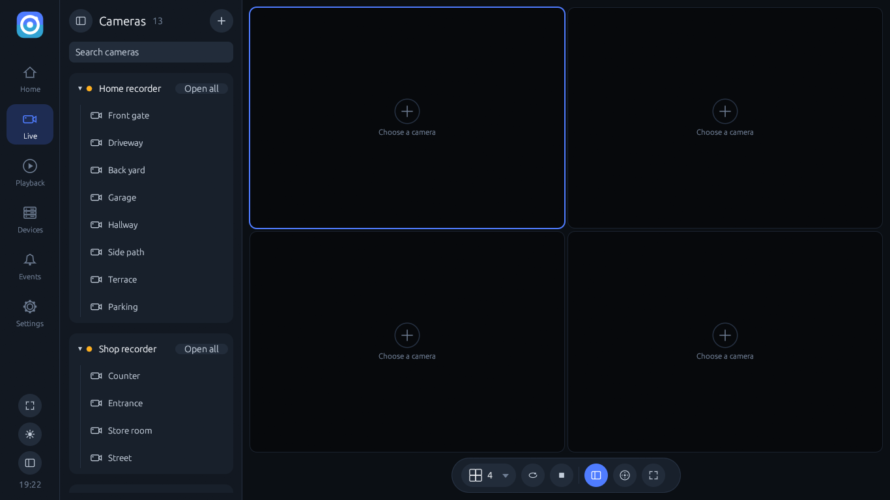
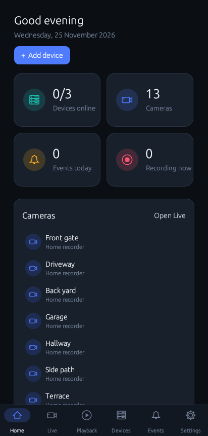
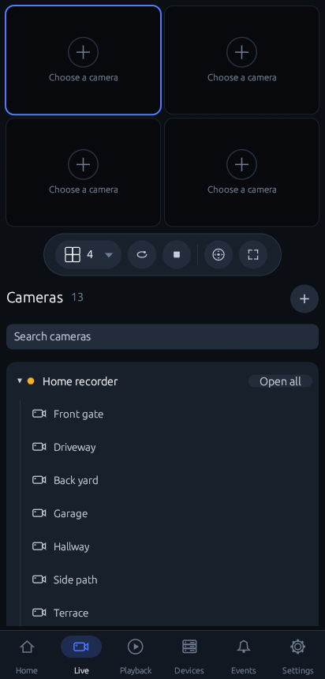

Live view, 1 to 64 windows
Twelve layouts, tours, digital zoom up to 8× and camera control (PTZ) with presets. Sharp or light stream picked for you.
Free and open source
MyCCTV shows live video, recordings and alarms from NVR / DVR recorders and IP cameras on Windows, macOS, Android phones and tablets, and Google TV. One small app, no cloud account, nothing leaves your home network.
H.264 and H.265 cameras · RTSP · Dahua-compatible recorders (CP Plus and others)


Built for home and small-shop setups: one recorder or several, cameras on a second router, a TV in the living room.
Twelve layouts, tours, digital zoom up to 8× and camera control (PTZ) with presets. Sharp or light stream picked for you.
A zoomable 24-hour timeline, 1/8× to 8× speed, clips and pictures. Falls back to the recorder's own files when it refuses standard playback.
Motion, alarm inputs, video loss and smart detections arrive as they happen, with a Watch button to jump to the camera.
Video quality, picture, detection, recording, time and network, plus every other setting the device offers, searchable.
Reach a recorder through a second Wi-Fi adapter or cable while the computer keeps its main internet connection, even with the same addresses on both.
Mouse, touch or TV remote. The layout adapts to phones, tablets, desktops and TVs, and browser-only TVs get a web app.
The same app on a 27-inch monitor and a phone. These pictures use a demo device list.



The newest release from GitHub.
Windows 10 and 11, 64-bit. One program, no installer: copy it anywhere and run it.
Download .exeAndroid 7 or newer: phones, tablets, Android TV, Google TV and Fire TV. 64-bit and 32-bit devices.
Download .apkmacOS 11 or newer, Apple silicon and Intel. First start: right-click the app and choose Open.
Download .dmg| TV or stick | How |
|---|---|
| Google TV Chromecast with Google TV, Google TV Streamer, Sony, TCL, Hisense Google TV | Install the APK; MyCCTV appears in the apps list. |
| Android TV Boxes and TVs with Android 7 or newer | Install the APK. |
| Amazon Fire TV Fire OS 6, 7 or 8 (most models from 2018 on) | Sideload the APK with Downloader or adb. Not yet tried on a real Fire TV. |
| Hisense VIDAA, LG webOS, Samsung Tizen TVs that only have a browser | Turn on TV sharing in MyCCTV on a computer or Android box, then open the address it shows in the TV's browser. |
The device needs standard video streaming (RTSP, usually on by default). Stuck? See Troubleshooting.